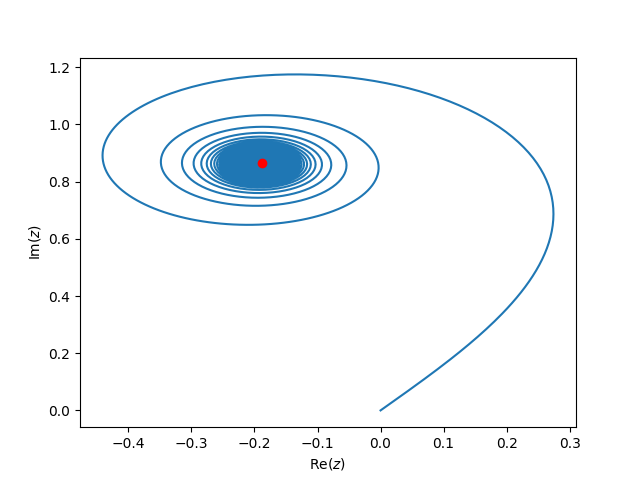

Lecture 3 Jan 11#
Warm-up question
Derive an expression for the momentum propagator \(\braket{p^\prime, t^\prime | p_0, t_0}\) for a free-particle.
Solution
This is straightforward because the momentum eigenstates are also eigenstates of the Hamiltonian for a free particle, so we can write
Today, we’ll first finish off the derivation of the path integral from last time. This gives us the result
Next, let’s discuss some of the implications and applications of this result.
Applications of path integrals#
The classical path and the semi-classical approximation#
We noted last time that the free-particle propagator ends up being of the form
where \(f(t^\prime-t_0)\) is a normalization factor that depends on the time-difference, and \(S_c\) is the action corresponding to the path \(x_c(t)\) that the particle would take according to classical physics (a straight line for a free particle with \(V(x)=0\)). What is the significance of this?
The classical trajectory of a particle is given by the Principle of least action which says that the trajectory \(x_c(t)\) extremizes (usually minimizes) the action. This means that for any perturbation to the path \(x_c(t)\rightarrow x_c(t) + \delta x(t)\), we have \(\delta S=0\), where
The second term can be integrated by parts:
The boundary term vanishes, since we consider only perturbed paths that start and end at the same locations (\(x_0\) and \(x^\prime\)), so \(\delta x=0\) at \(t=t_0\) or \(t=t^\prime\), so we have
where \(\delta L/\delta x\) is known as the functional derivative. Then setting \(\delta S=0\) for arbitrary perturbations \(\delta x\) gives the Euler-Lagrange equation
which is the equation of motion for a particle with Lagrangian \(L\). You will see this in your classical mechanics course, if not already.
The significant of this result for us is that the classical trajectory has a special property that it is the trajectory where \(\delta S=0\) for neighbouring paths. This means that the classical trajectory and its neighbours add up in phase with each other when we sum up their contributions \(e^{iS_c/\hbar}\) to the path integral. A trajectory that is far away from the classical path does not have \(\delta S=0\), so then neighbouring paths contribute different phases and cancel out.
Illustration of the relative phase shifts
As a simple example of this, consider the propagator from the point \((x,y) = (-1,0)\) to \((1,0)\) and for simplicity let’s consider paths for which the particle travels in a straight line to a point \((0,y)\) in half the time and then from there in a straight line to the endpoint in the remaining half of the time. The action is then
Summing \(e^{iS/\hbar}\) over the different paths taking a discrete set of \(y\) values \(y_n = n\Delta y\), the path integral is then proportional to
The plot below shows the cumulative value of this sum as a trajectory in the complex plane as we include more and more terms:

Code
import numpy as np
import matplotlib.pyplot as plt
yvec = np.linspace(0,100,10000)
dy = yvec[1]-yvec[0]
sum = np.zeros_like(yvec, dtype=complex)
sum[0] = 0
for i, y in enumerate(yvec):
if i>0:
sum[i] = sum[i-1] + dy * np.exp(1.0J * (1 + y**2))
plt.plot(np.real(sum), np.imag(sum))
# Integrate[Exp[I (1 + y^2)], {y, 0, Infinity}]
prediction = np.sqrt(1.0J*np.pi)/2 * np.exp(1.0J)
plt.plot(np.real(prediction), np.imag(prediction), 'ro')
plt.show()
The red dot shows the analytic value of the sum. The blue curve starts at the origin and eventually reaches the red dot once we add in many terms in the sum. However, we see that the terms involving larger and larger \(y\) don’t contribute much to the sum: alternate terms have very different phases and the trajectory goes around in circles. Most of the contributions to the final value are from the initial part of the sum where \(y\) is small and the contributions add in phase. Another way to say this is that the terms with large \(y\) don’t contribute very much to the final value.
For classical particles where \(S\) is large compared to \(\hbar\), only paths extremely close to the classical path can add in phase, the others cancel. The homework questions will give you a chance to calculate the numerical value of \(S\) for different cases and get a feeling for when we can consider the motion classical (path integral dominated by classical trajectory) or quantum (\(S\) is small enough that even non-classical trajectories can make a significant contribution to the integral).
The semi-classical approximation involves expanding \(S\) around the classical value:
where now we are using the second order functional derivative term (the first order term vanishes for the classical path). We won’t go into the details of this here, but you can see that the propagator will be \(\propto e^{iS[x_c]/\hbar}\) multiplied by a correction term corresponding to the integral over the different trajectories \(\delta x(t)\). We found this result (that the propagator is \(\propto e^{iS[x_c]/\hbar}\)) for the free particle, and in fact this holds also for Lagrangians that are up to and including quadratic in \(x\) or \(\dot{x}\) (see comment in Townsend section 8.5). This includes the harmonic oscillator (HW 1, question 8.3 from Townsend).
Interference experiments with gravity and magnetic fields#
Section 8.7 of Townsend talks about an interesting experiment that looks for the phase difference between two neutron beams, one of takes a path that is vertically above the other, i.e. has a difference value of gravitational potential. This gives the two paths a relative phase shift \(\approx img(\Delta z)t/\hbar\) compared to the other. Figure 8.11 shows the measured interference fringes.
Another example is in section 14.1 of Townsend which talks about the Aharanov-Bohm effect. We’ll discuss this more later, but a charged particle has a term in the Lagrangian
This means that a charged particle picks up a phase that depends on the vector potential \(\vec{A}\), even in a region where the magnetic field \(\vec{B} = \vec{\nabla}\times\vec{A}\) vanishes. Paths that go around a solenoid on different sides have a net phase, even though the magnetic field outside the solenoid vanishes! The relative phase is
the total magnetic flux through the solenoid. Classically a particle would have no idea that the solenoid was there, but the quantum particle does!
Relation to statistical mechanics#
Path integrals also turn out to be useful in statistical mechanics through the idea of imaginary time.
Consider the quantity
This is actually the result we expect, since the first line shows that we are evaluating the trace of the Hamiltonian in the position basis, but the trace of an operator is the same in any basis, so it can also be evaluated in the basis of stationary states which gives the final expression.
A similar sum over energies appears in statistical mechanics as the partition function
where \(\beta = 1/k_BT\). The partition function is an important quantity because it can be used to obtain many different thermodynamic properties of a system, e.g. the energy is given by \(E = -\partial \ln Z/\partial \beta\). You’ll see more of this in your stat mech courses, but for us the important point is that the expression for the partition function can be obtained from equation (3) if we evaluate it at the imaginary time \(it/\hbar\rightarrow \beta\). This allows the application of path integral techniques to statistical mechanics. This is beyond the scope of our course, but you will see it in more advanced courses on quantum or condensed matter.
Further reading#
Section 8.6 of Townsend has a nice discussion of the difference between classical and non-classical paths. Section 8.7 of Townsend discusses the gravity interference experiment, and section 14.1 the Aharanov-Bohm effect.
Path Integrals in Quantum Physics - a comprehensive set of lectures aimed at graduate students if you want to dive into this topic in more depth, covering path integrals in quantum mechanics and statistical mechanics.